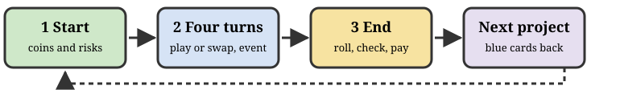
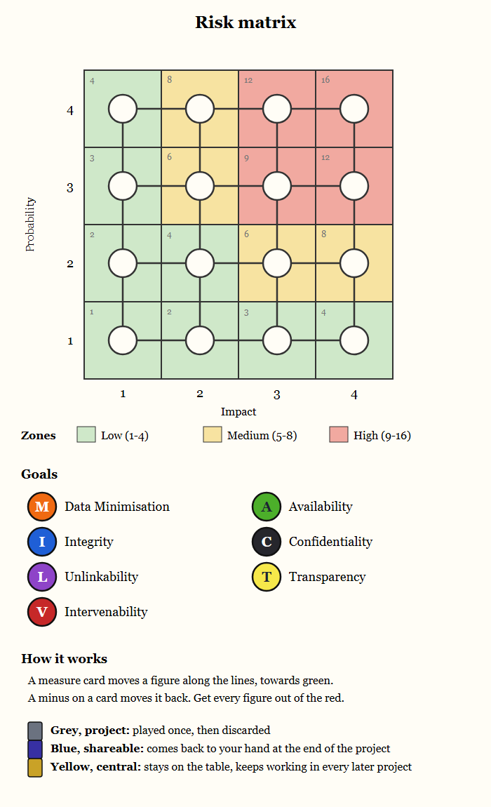

The Data Protection Risk Game, paper version. One for each team.

Play a card. The processing owner plays a measure card, pays its coins and moves the figures on the matrix.
Swap cards. Put up to [3] cards on the discard pile and draw as many. It costs [1] coin. This is your action.
Then the facilitator draws an event.
Grey, project. Played once, then onto the discard pile. Draw a new card.
Blue, shareable. Pile it face down in front of you. It comes back to your hand at the end of the project. No new card.
Yellow, central. Stays face up on the table and keeps working in every later project. Draw a new card.
Roll your d20 once. The facilitator checks every figure on your matrices. Roll too low for the probability row of a figure and you pay for its impact.
Coins. You get coins at the start of every project. A team that cannot pay is out of business.
